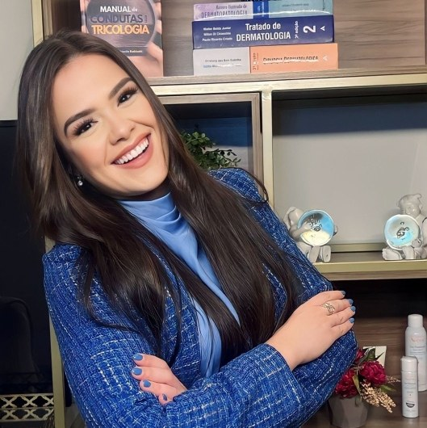

Início · A Dra. Alexia
Dra. Alexia Lima: formação na UFBA, residência no HUPES.
Alexia Silva Lima é dermatologista em Salvador, com título de especialista em Dermatologia (RQE 25142), e membro titular da Sociedade Brasileira de Dermatologia. Fez a residência em Dermatologia no Hospital Universitário Professor Edgard Santos, da UFBA.
Trajetória
Formação
- Medicina · Universidade Federal da BahiaGraduação em Medicina, como informa o perfil da médica na Doctoralia.
- 2021 – 2024 · Residência em DermatologiaHospital Universitário Professor Edgard Santos (HUPES/UFBA).
- 2022 · 75º Congresso Brasileiro de DermatologiaAutora principal de duas mini-comunicações e coautora de outros trabalhos.
- RQE 25142 · DermatologiaTítulo de especialista em Dermatologia, com o CRM-BA 35471.
- Membro titular da SBDCategoria titular na Sociedade Brasileira de Dermatologia.
Hospital universitário
Residência no HUPES
De março de 2021 a fevereiro de 2024, a Dra. Alexia foi médica residente de Dermatologia no Hospital Universitário Professor Edgard Santos (HUPES), o hospital universitário da Universidade Federal da Bahia. O vínculo está registrado no Cadastro Nacional de Estabelecimentos de Saúde (CNES), com carga horária ambulatorial e hospitalar.
Os trabalhos que ela apresentou no Congresso Brasileiro de Dermatologia de 2022 vieram desse período, com a equipe de Dermatologia do HUPES.
Produção científica
Trabalhos em congresso
Em 2022, a Dra. Alexia teve trabalhos aprovados para o 75º Congresso Brasileiro de Dermatologia, da Sociedade Brasileira de Dermatologia, na categoria mini-comunicação. Como autora principal:
- “Síndrome ceratite-ictiose-surdez (KID) associada à mutação do gene GJB2 – Relato de caso”
- “Dermatofitose extensa associada à mutação do gene STAT-1 – Relato de caso”
Ela também é coautora de outros trabalhos da equipe de Dermatologia do HUPES apresentados no mesmo congresso. Ver a lista oficial (PDF da SBD)
Onde conferir
Registro e sociedade
CRM-BA 35471
Conselho Regional de Medicina da Bahia.
RQE 25142
Registro de qualificação de especialista em Dermatologia.
Membro titular da SBD
Sociedade Brasileira de Dermatologia. Ver o cadastro
Nome completo
Alexia Silva Lima.
Atuação
Áreas de atuação
No perfil da Doctoralia, a Dra. Alexia declara experiência em manchas na pele, dermatologia estética, psoríase e imunobiológico e dermatologia clínica. Entre as doenças que ela lista estão:
Atende no Centro Médico Empresarial Vitraux, em Salvador, e por teleconsulta, de forma particular. Consulta e teleconsulta
Doctoralia
O que dizem os pacientes

O perfil da Dra. Alexia na Doctoralia reúne 44 opiniões de pacientes, com média 5. Atenção, explicação e exame completo são os pontos que mais aparecem.
“Muito capacitada, além de dominar o conteúdo, consegue passá-lo com grande maestria.”M.C.P, em opinião publicada na Doctoralia
“Uma médica super atenciosa, humana e dedicada em cuidar do paciente.”F. O. S., em opinião publicada na Doctoralia
Dúvidas frequentes
Perguntas comuns
A Dra. Alexia é membro da Sociedade Brasileira de Dermatologia?
Sim, na categoria titular. O cadastro pode ser conferido no site da SBD.
Onde ela fez a residência?
No Hospital Universitário Professor Edgard Santos (HUPES), da Universidade Federal da Bahia, de 2021 a 2024.
Quais são os registros dela?
CRM-BA 35471 e RQE 25142, em Dermatologia.
Agende
Uma consulta para entender a sua pele.
Atendimento particular no Centro Médico Empresarial Vitraux, em Salvador, ou por teleconsulta. Horários e agendamento pelo WhatsApp (71) 3190-9615.